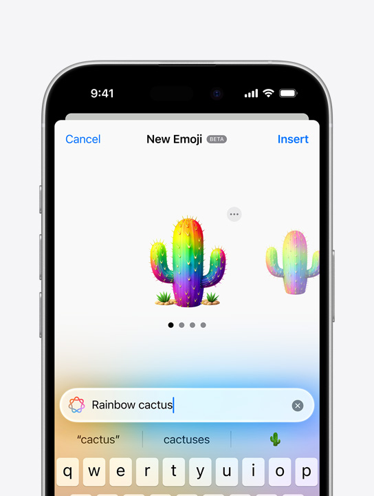

iPhone
Companheiros ilustres.
Vai ser genial. Os modelos mais recentes de iPhone foram feitos para Apple Intelligence, o sistema de inteligência pessoal que ajuda você a escrever, se expressar e fazer de tudo facilmente. Com proteções de privacidade revolucionárias, você tem a segurança de que ninguém pode acessar seus dados, nem mesmo a Apple1.
Chip da Apple, superinteligente, superveloz. Os chips do iPhone melhoram tudo o que você faz. Os mais recentes são a tecnologia por trás da Apple Intelligence e trazem recursos avançados para jogos AAA e a nova geração de Estilos Fotográficos.

Conheça melhor o iPhone.
iPhone e AirPods
Mostre seu lado visual. Faça um Genmoji pelo teclado e coloque nas mensagens. Quer um cacto com as cores do arco-íris? É simples. Digite uma descrição e confira a prévia.
Não lembra onde deixou seu iPhone? Os modelos mais recentes de Apple Watch podem mostrar a distância e a direção aproximadas12. Para tirar uma foto em grupo no iPhone, reúna a turma e use o Apple Watch como visor. E, quando atender uma chamada no Apple Watch, é só tocar no iPhone para continuar a conversa por lá.
iPhone e Mac
Desenvolvida para proteger sua privacidade em todas as etapas. Com a Computação Privada na Nuvem, a Apple Intelligence usa modelos maiores criados pela Apple baseados em servidores com chips da Apple. Ela processa solicitações mais complexas e protege sua privacidade ao mesmo tempo.
Configure os AirPods no iPhone com apenas um toque. Você vai adorar o Áudio Adaptativo, que ajusta automaticamente a redução de ruídos de acordo com o ambiente e com suas interações ao longo do dia.
Bateria de longa duração? 100%. Nosso hardware e software são projetados para trabalharem juntos e com eficiência. Assim, você faz mais a cada recarga, como assistir a até 33 horas de vídeo no iPhone 16 Pro Max2.